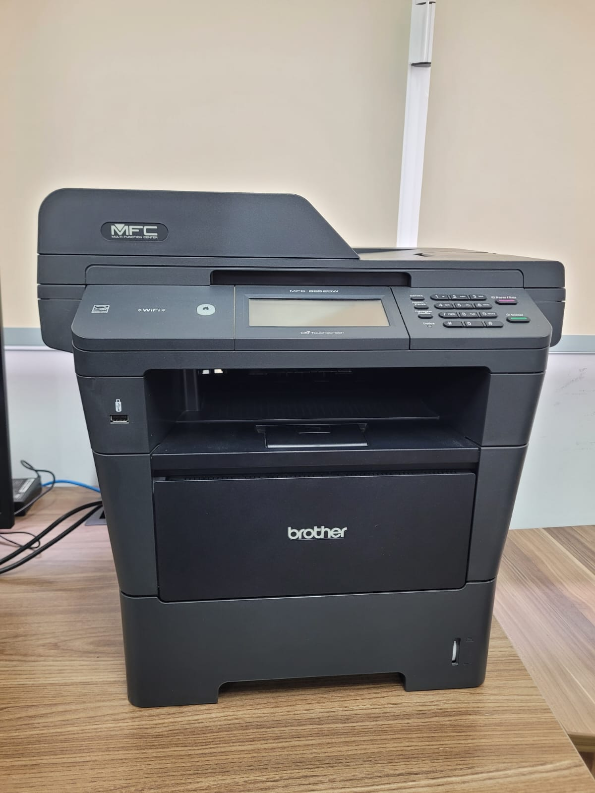

Impressora Multifuncional Brother MFC-8952DW OPERACIONAL
Categoria: Impressora multifuncional monocromática a laser para impressão, cópia, digitalização e faxIdentificação Patrimonial
| Código Interno | IMP001 |
|---|---|
| Endereço Físico | MPC004 |
| Fornecedor | Brother |
1. Descrição e Finalidade
A Brother MFC-8952DW é uma impressora multifuncional monocromática a laser destinada à impressão, cópia, digitalização e transmissão de documentos. O equipamento permite o processamento e a reprodução de documentos em diferentes formatos, contando com recursos de impressão frente e verso automática, alimentação automática de documentos e conectividade em rede. No Laboratório de Logística, pode ser empregado na impressão de relatórios, formulários, etiquetas, materiais didáticos e demais documentos relacionados às atividades de ensino, pesquisa, extensão e gestão do laboratório.

2. Especificações Técnicas
| Marca / Modelo | Brother / MFC-8952DW |
|---|---|
| Tipo | Impressora multifuncional monocromática a laser |
| Tecnologia de impressão | Eletrofotográfica a laser |
| Funções | Impressão, cópia, digitalização e fax |
| Display | Tela LCD colorida, widescreen, sensível ao toque de 5" |
| Memória | 128 MB (padrão), expansível até 256 MB via DDR2 SO-DIMM |
| Formatos de papel | A4, Carta, B5, A5, A5 (borda longa), B6, A6, Executivo, Ofício e Fólio |
| Gramatura da bandeja principal | 60 a 105 g/m² |
| Gramatura da bandeja multiuso | 60 a 163 g/m² |
| Cópia | Até 99 cópias; ampliação/redução de 25% a 400% |
| Impressão direta | PDF, JPEG, TIFF, XPS e PRN |
| Dimensões (L × A × P) | 491 × 477 × 415 mm |
| Peso | Aproximadamente 17,0 kg (com consumíveis) |
| Alimentação elétrica | 110–120 V CA, 50/60 Hz |
| Consumo máximo | Aproximadamente 1200 W |
3. Guia Rápido de Operação
Checklist pré-uso:
- Verificar se o cabo de alimentação está conectado e se o equipamento está ligado à rede elétrica;
- Verificar a disponibilidade de papel e se a bandeja está corretamente posicionada;
- Confirmar a disponibilidade de toner e verificar se não há mensagens de erro no painel do equipamento;
- Verificar se o documento ou arquivo a ser impresso está corretamente configurado.
Cuidados:
- Não puxar folhas presas com força, seguindo o procedimento indicado pelo fabricante para remoção de atolamentos;
- Não abrir compartimentos internos durante a operação, exceto quando necessário para manutenção ou substituição de suprimentos;
- Manter o equipamento em superfície estável, seca e livre de objetos que possam obstruir suas áreas de ventilação;
- Utilizar papel e suprimentos compatíveis com as especificações do equipamento;
- Não tocar no interior do equipamento imediatamente após períodos prolongados de impressão, devido ao aquecimento de componentes internos;
- Desligar o equipamento e comunicar o responsável técnico em caso de fumaça, odor de queimado, ruídos anormais ou falhas recorrentes.
Passo a passo:
- Ligar: acionar o botão de alimentação e aguardar a inicialização do equipamento até que o painel indique que a impressora está pronta.
- Imprimir: no computador, selecionar o documento desejado, escolher a impressora Brother MFC-8952DW e configurar as opções de impressão, como quantidade de cópias, tamanho do papel e impressão frente e verso, quando disponível.
- Copiar: posicionar o documento no vidro do scanner ou no alimentador automático de documentos, selecionar a função de cópia no painel e configurar a quantidade e demais parâmetros desejados.
- Digitalizar: posicionar o documento no vidro ou alimentador, selecionar a função de digitalização e indicar o destino do arquivo conforme a configuração do equipamento.
- Desligar: após concluir as atividades, verificar se não há trabalhos de impressão ou digitalização em andamento e desligar o equipamento pelo botão de alimentação.
5. Manutenção e Conservação
Componentes Mecânicos e Estruturais
- Manter o equipamento livre de poeira e resíduos de papel;
- Superfícies e Painel: utilize um pano de microfibra seco para limpar a carcaça e o painel touchscreen. Evite produtos químicos abrasivos que possam danificar a interface de toque;
- Vidro de Exposição e ADF: limpe o vidro do scanner e a fina tira de vidro do Alimentador Automático de Documentos (ADF) com um pano levemente umedecido em álcool isopropílico. Isso previne o aparecimento de riscos verticais nas cópias e digitalizações;
- Fio de Corona: sempre que trocar o toner, limpe o fio de corona do cilindro deslizando a aba verde (no conjunto do cartucho) de ponta a ponta cerca de cinco vezes. Certifique-se de retornar a aba à sua posição inicial para evitar faixas pretas na impressão;
- Condições do Papel: utilize apenas papel adequado para impressão a laser. Mantenha as resmas armazenadas em local seco; papel úmido ondula ao passar pelo fusor quente, causando atolamentos e desgaste nos tracionadores;
- Proteção Elétrica: impressoras a laser possuem picos altos de consumo de energia durante o aquecimento inicial. Conecte o equipamento a tomadas aterradas ou a nobreaks de alta capacidade projetados para impressoras, evitando estabilizadores comuns que podem danificar a placa lógica.
6. Checklist Pós-Uso
Para o encerramento das atividades e guarda do equipamento:
- Verificar se não há documentos ou folhas esquecidas no equipamento;
- Retirar documentos do vidro do scanner ou do alimentador automático;
- Conferir se não há papel obstruído ou resíduos no equipamento;
- Verificar se a bandeja de papel permanece organizada e abastecida, quando necessário;
- Retirar documentos impressos da bandeja de saída;
- Limpar externamente o equipamento com material adequado, evitando o uso de líquidos diretamente sobre a superfície;
- Desligar o equipamento caso não haja previsão de utilização;
- Registrar eventuais falhas, atolamentos ou necessidade de reposição de toner no controle do laboratório.
7. Referências e Documentação
- Manuais oficiais do produto: https://support.brother.com/g/b/manualtop.aspx?c=br&lang=pt&prod=mfc8952dw_us
- Downloads de drivers e software: https://support.brother.com/g/b/downloadtop.aspx?c=br&lang=pt&prod=mfc8952dw_us
- Especificações técnicas completas: https://support.brother.com/g/b/spec.aspx?c=br&lang=pt&prod=mfc8952dw_us
- Perguntas frequentes e solução de problemas: https://support.brother.com/g/b/faqtop.aspx?c=br&lang=pt&prod=mfc8952dw_us